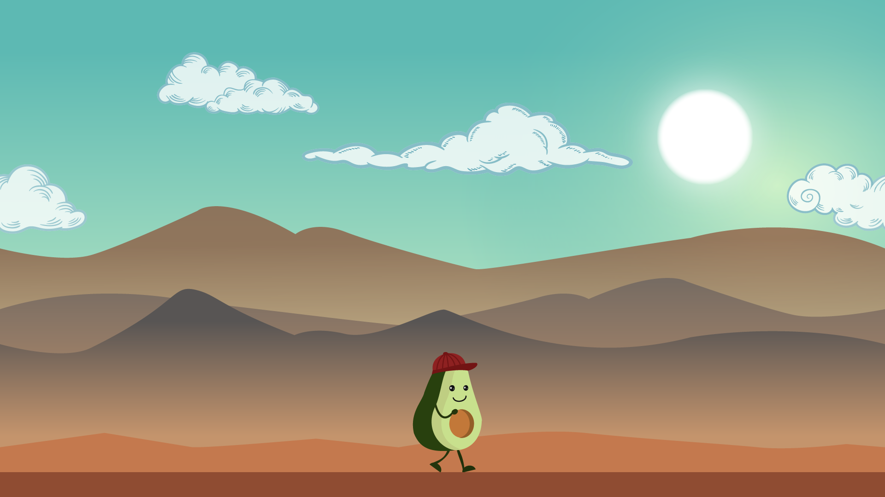

Theme 04: Basic Animation
In the theme Basic Animation we had to work on many small individual projects as well as group assignments. We were introduced the basic principles for the design and programming of digital solutions, with a particular focus on the design and structuring of the user interface.
04.01.01 - Sprite animation on a background
Assignment’s focus:
The aim is to design our own character and background, draw them in illustrator, make an animated sprite, and put everything together in css.
What I learned:
In this chapter of the module I learned how to create characters and what are the specifications of the different Character Archetypes. I decided to design a character who would be The Protagonist (The Hero). We learned about the importance of the basic shapes used for designing the characters - circle (friendly), triangle (evil), rectangle (strong). The design of my character is based on a circle shape which makes the character friendly and I used bright (happy) colors inspired from the animation series “Fruitties” and the game “Alto’s Adventure”.
I also learned about designing backgrounds and how to put everything together in html and css. For this purpose we were introduced to css transitions and how to work with svg files and sprite.
- Animation and documentation:
04.02.01 - Javascript controlled animation

Assignment’s focus:
The task is to create a web page where the user can turn ten different css animations for our character (created in the previous assignment) on and off. This functionality must be javascript controlled. It should be obvious for the user which button is on/off and at least one sound should be included to help the user to understand the application.
What I learned:
When working on this project I learned the basics of JavaScript - variables, .querySelector, .classList, events and functions. I used the function if/else in this project in order to make all the buttons work as required. I learned how JavaScript works together with html and css. I was introduced to the console inside of the inspector of each browser.
- Link to animation:
04.03.02 - Project pool 2 - Stopwatch

Assignment’s focus:
We had the chance to choose a project from the project pool site and try to recreate it on our own. We had to work in pairs and on the 2nd day we choose to create a stopwatch.
What I learned:
While doing this project I learned the basics of time based events. I got to work more with variables and the if/else function. I choose a simple style for my project so it would be easy and nice to use.
- Prototype and documentation:
04.04.01 - Onboarding

Assignment’s focus:
This is a group project. The aim is to create an interactive, animated, web based onboarding sequence that through gamification explains an important aspect about moving to Denmark. Our team created a sequence of screens explaining the “rules and formalities” a newcomer has to go through when moving to Denmark.
My role in the project:
My responsibilities in this project were to create a moodboard, style tile, documentation and the illustrations and visuals needed for the onboarding.
What I learned:
I had the chance to get better in working with Illustrator as I was in charge of the illustrations and the visuals for the project. I created them in a flat design style, so they would be simple and nice to look at, I worked with just a few colors - mainly red and green (complementary colors). I used different variations of the same hues (monochrome color combinations).
- Onboarding and documentation: